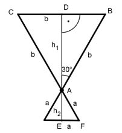

Aufgabe 211 Wie groß ist das Volumen des Rotationskörpers, wenn a + b = 12 cm und wenn sich a:b wie b:(a + b) verhält?

a b --- = ------- --> a + b = 12 eingesetzt b a + b a b --- = ----- |*b b 12 b2 a = ---- 12 In a + b = 12 eingesetzt: b2 ---- + b = 12 |*12 12 b2 + 12b = 144 |-144 b2 + 12b - 144 = 0 p, q - Formel: p = 12 ; q = - 144 b1,2 = b1,2 = -6 ± b1,2 = -6 ± b1,2 = - 6 ± 13,42 b1 = - 6 + 13,42 = 7,42 cm b2 = - 6 - 13,42 < 0 --> keine Lösung a + 7,42 = 12 | -7,42 a = 4,58 cm Es entstehen 2 Kegel als Rotationskörper: Winkel bei A = 2 * 30° = 60° Das Dreieck ABC ist gleichschenklig, deswegen sind auch die beiden anderen Winkel bei B und C = 60° --> das Dreieck ist gleichseitig. --> DB = b/2 Satz von Pythagoras im Dreieck ABC: b2 = h12 + (b/2)2 |-(b/2)2 b2 3 h12 = b2 - ---- = --- b2 = 0,75 * 7,422 cm2 |√ 4 4 h1 = 6,43 cm Satz von Pythagoras im Dreieck AEF: a2 = h22 + (a/2)2 | -(a/2)2 a2 3 h22 = a2 - ---- = --- a2 = 0,75 * 4,582 cm2 |√ 4 4 h2 = 3,97 cm r1 = b/2 = 3,71 cm r2 = a/2 = 2,29 cm л * r12 * h1 V1 = -------------- = 3 л * 3,712 cm2 * 6,43 cm = -------------------------- = 92,6 cm3 3 л * r22 * h2 V2 = --------------- = 3 л * 2,292 cm2 * 3,97 cm = ------------------------- = 21,8 cm3 3 Vgesamt = 92,6 cm3 + 21,8 cm3 = 114,4 cm3